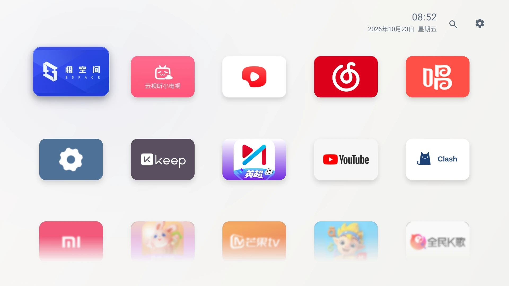
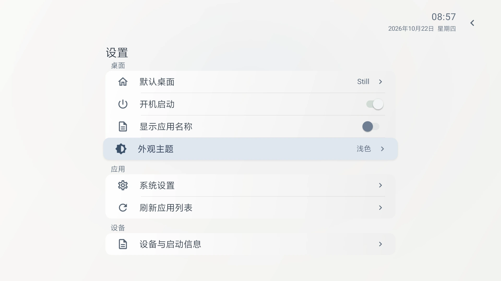
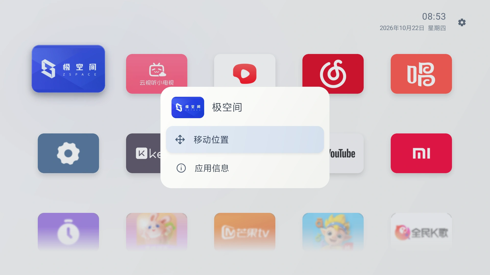

Room for what matters
一个简洁、无广告的 Android 电视桌面。

浏览器不支持视频播放。下载实机演示
隐藏名称，只留图标。

长按应用，即可调整顺序。

0.8.2 预览版 · Android 6.0+ · 0.5 MB
可在 Still 设置中查看默认桌面状态、尝试开机启动。是否生效取决于电视固件，Home 键、重新开机和待机唤醒需分别确认。
支持 Android 6.0 及以上。已在小米电视 5 Pro / Android 9 上实机使用，其他型号需确认兼容性。